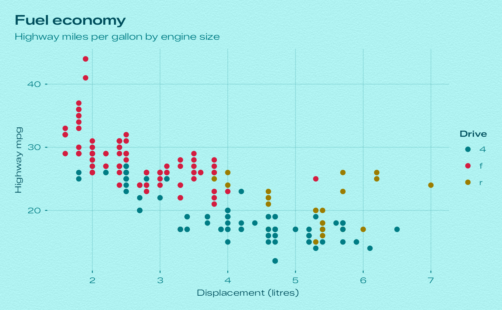
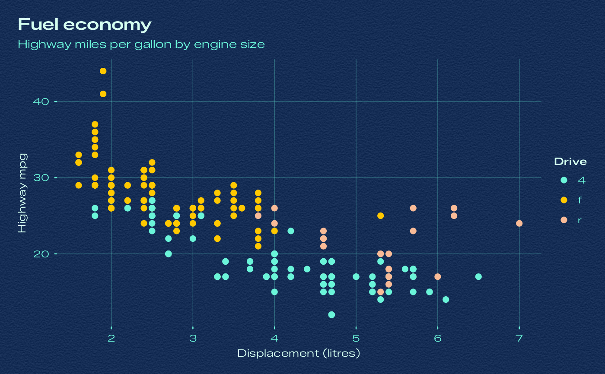
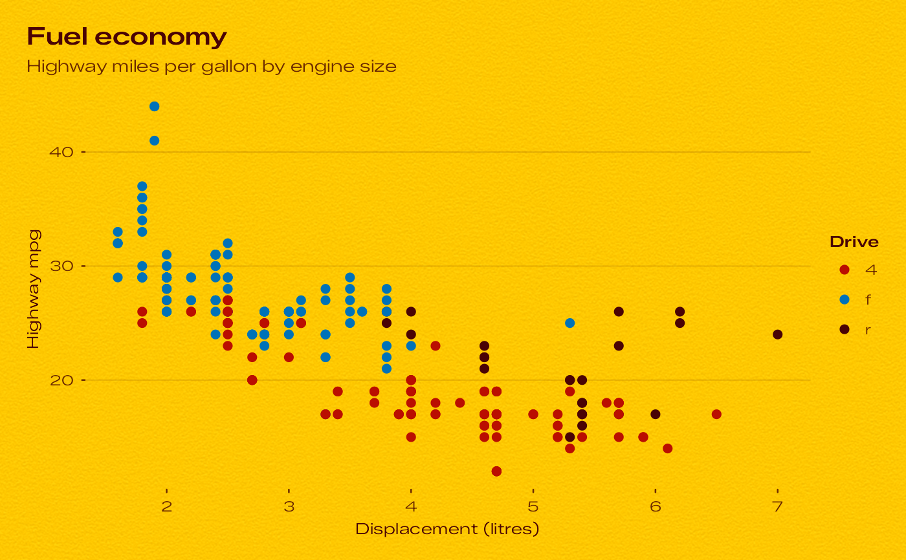

theme_bauhaus() styles a plot after one of the sixteen day dials of the Bauhaus Clock
screensaver:
Usage
theme_bauhaus(
dial = "turquoise",
base_size = 11,
base_family = bauhaus_font_family(),
header_family = bauhaus_font_family("semibold"),
base_line_size = base_size/22,
base_rect_size = base_size/22,
grain = TRUE,
grain_density = 150,
grid = c("xy", "x", "y", "none")
)Arguments
- dial
A dial name. Case, spaces, hyphens and underscores are ignored, so
"Signal Blue","signal-blue"and"signal_blue"all work. Seebauhaus_dial_names().- base_size
Base font size, in points.
- base_family
Font family for body text.
- header_family
Font family for titles.
- base_line_size
Base size for line elements.
- base_rect_size
Base size for rect elements.
- grain
Paper grain.
TRUEuses the grain strength measured for the dial,FALSEdraws a flat plate, and a number sets the strength (standard deviation in 8-bit code values).- grain_density
Grain samples per inch. Lower values give a coarser grain.
- grid
Which major grid lines to draw:
"xy","x","y"or"none".
Details
Background: the dial's plate, lifted as the screensaver lifts it, with the screensaver's paper grain at the strength measured for that dial (see
element_grain()).Type: Zalando Sans Expanded, the screensaver's typeface (see
bauhaus_font_family()). Titles use the semibold weight.Colour: titles and the default geom colour use the hour-numeral ink; axis labels, ticks and grid lines use the minute-track ink, with round line ends like the track's ticks.
Palettes: the dial's discrete and sequential palettes become the plot's default colour and fill scales (see
bauhaus_palette()), and its accent colour is used for things likeggplot2::geom_smooth().
Each dial also has its own shortcut, such as theme_bauhaus_turquoise().
Fonts
The bundled fonts are registered with systemfonts, which the ragg and svglite devices use.
ggplot2::ggsave() uses ragg for PNG, JPEG and TIFF files when it is installed. For R Markdown
and Quarto, set the chunk option dev = "ragg_png"; in RStudio, choose the "AGG" graphics backend.
On other devices call bauhaus_showtext() first, or pass base_family = "sans".
See also
scale_colour_bauhaus_d() and friends for the matching scales, bauhaus_colours() for
the raw colours.
Examples
library(ggplot2)
p <- ggplot(mpg, aes(displ, hwy, colour = drv)) +
geom_point(size = 2) +
labs(
title = "Fuel economy",
subtitle = "Highway miles per gallon by engine size",
x = "Displacement (litres)", y = "Highway mpg", colour = "Drive"
)
p + theme_bauhaus()

p + theme_bauhaus("ocean")

p + theme_bauhaus_yellow(grid = "y")
